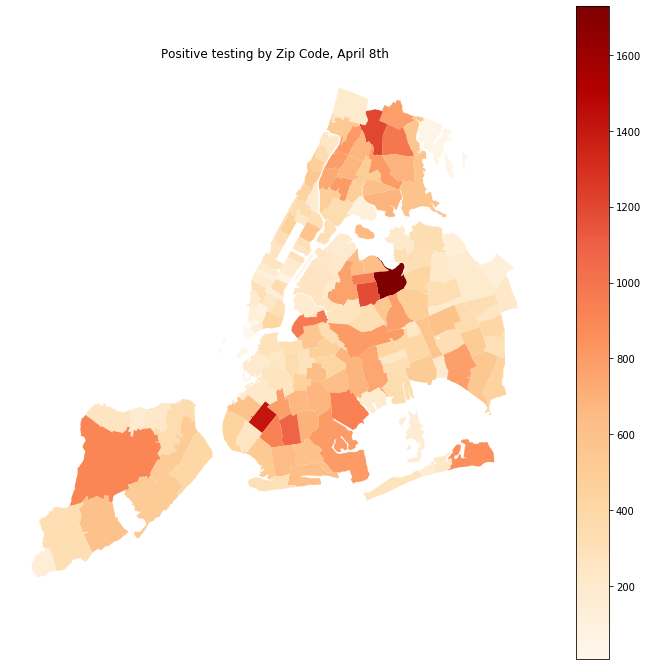
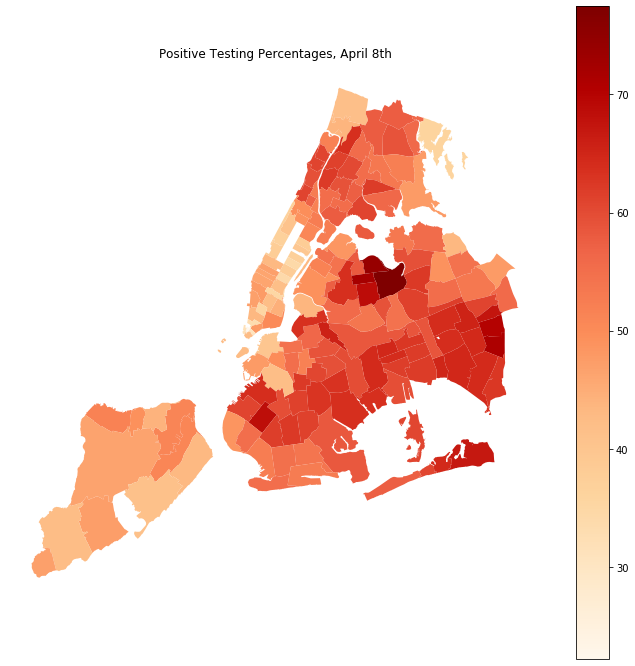

As more and more cases from COVID-19 are reported by the thousands, testing kits in New York City are still limited and hard to come by. Given that New York City is in the midst of its most challenging time in this epidemic, it is important to be able to allocate these limited tests in the most efficient and strategic manner. Unfortunately at this time the best way to detect new clusters is to test in large quantities. Distributing tests wisely could maximize detection in the city’s epicenters and will decrease future cases.
South Korea and other countries applied aggressive testing early on. Consequently, these countries were able to (at least temporarily) curb the spread of the virus. NYC should be testing as many people as possible, but given limited resources, it should focus on its hardest hit areas. Additionally, almost 40 days into the first confirmed case in NYC, we have more data coming every day that can assist on applying new strategies going forward.
Working with the NYC Department of Health and Mental Hygiene data on testing in each of City’s zip codes, some interesting trends can be revealed. I acquired the DOHMH data on daily coronavirus testing on April 8th. This data shows how not only the number of confirmed cases, but also the percentage of positive tests, vary drastically from zip code to zip code.
As of April 8th, the number of positive cases ranged from as low as 8 to as high as 1,728 per zip code. These absolute numbers on their own do not tell the entire story as zip codes vary in their size and land use. For example, the smallest number of positive tests was recorded in zip code 10006, which is one of NYC smallest zip codes in terms of number of residents (only 4,581 based on the 2010 census). Having said that, these absolute numbers can help detect local epicenters and assist the City and state response.
Data: NYC DOHMH
These are the top 5 zip codes with the largest number of people testing positive as of April 8th:
The positive testing percentage is calculated as the number of people testing positive divided by the number of total people tested and multiplied by 100 so the final value is a percentage. Drawing from these percentages we are able to better understand some of the current clusters. The below map, illustrates this further. This graduated map shows the highest percentages of positive testing in a darker shade of red. Areas with low percentages of positive testing appear in light shades of orange. Clearly, different areas have very different ratios of positive tests to absolute tests. In particular, 10006, 10005, and 10017 are among the lowest in terms of the positive testing percentages with 22%, 31%, and 34% respectively. In zip code 10017 for example, out of 217 tests only 74 came back positive. In contradiction, 11372, 11369 and, 11368 are all among the top five highest positive testing percentages with 72%, 74% and as high as 77% respectively. To put actual numbers into these percentages, in zip code 11368 in Corona, Queens the most affected area in the city, 1,728 tests out of a total of 2,231 came back positive. This means that for each person who tested negative in Corona, almost 4 people tested positive.
Data: NYC DOHMH
These huge differences in positive testing ratios are suspicious. If testing resources are distributed equally across the city’s zip codes, why then do these ratios vary so greatly? Are low percentages of positive test cases an indication that people in those areas are more likely to seek testing? Do high percentages indicate that people are less likely to seek testing and only do so as a last resort?
At this point it is hard to know exactly why we are seeing these variations in the percentage of positive testings. The ability to seek testing could depend on many factors like awareness of the symptoms of the virus, healthcare coverage, and other social and economic issues. And while the causation is yet to be revealed, the fact that Manhattan is seeing much smaller percentages of positive testing in comparison to areas in inner Queens and Brooklyn is very disturbing.
If we assume that people from all over the city have an equal access to COVID-19 testing, then the fact that one area’s ratio is higher could be an indication that there are more people infected with the virus in this area. That on its own should lead to increased testing as a tool to curb the infections.
But if the access to testing is not equally distributing then this could be due to multiple reasons. One reason could be that people may be seeking testing using different set of judgment than others. So that they choose to don’t get tested, unless they believe their lives are in immediate danger (in some cases these people may be seeking help when it's already too late). Another reason for these different percentages of positive testings could be that people from lower income areas are more reluctant to get tested due to fear of high costs of hospitalization, especially if they lack adequate health insurance. Another reason could be that people from lower income neighborhoods may have already been in financial distress prior to the economic fallout caused by the pandemic. Furthermore, many of them are working in the service industry have possibly lost their jobs. These factors can end up leading to prioritizing worries about how to afford food or rent rather than health conditions.
The bottom line is that no matter what is the reason for these different rates of positive testing, the areas with highest rates should be targeted as soon as possible. Residents of these areas should be given transparent and accurate information on who should seek testing and where these can be accessed entirely for free. This information should be available in multiple languages and distributed in the most low-tech medium (e.g. flyers).
In my opinion, in the very least, the city and the state should actively seek to increase testing ASAP in the following areas: - Corona and East Elmhurst, Jackson Heights, Queens Village and Cambria Heights in Queens. - Midwood and Borough Park in Brooklyn. - Norwood in the Bronx.
Early and widespread testing may save the lives of those who are sick and are not currently seeking help. Furthermore, early testing will reduce contamination and kickstart recovery in the City’s most overwhelmed areas.